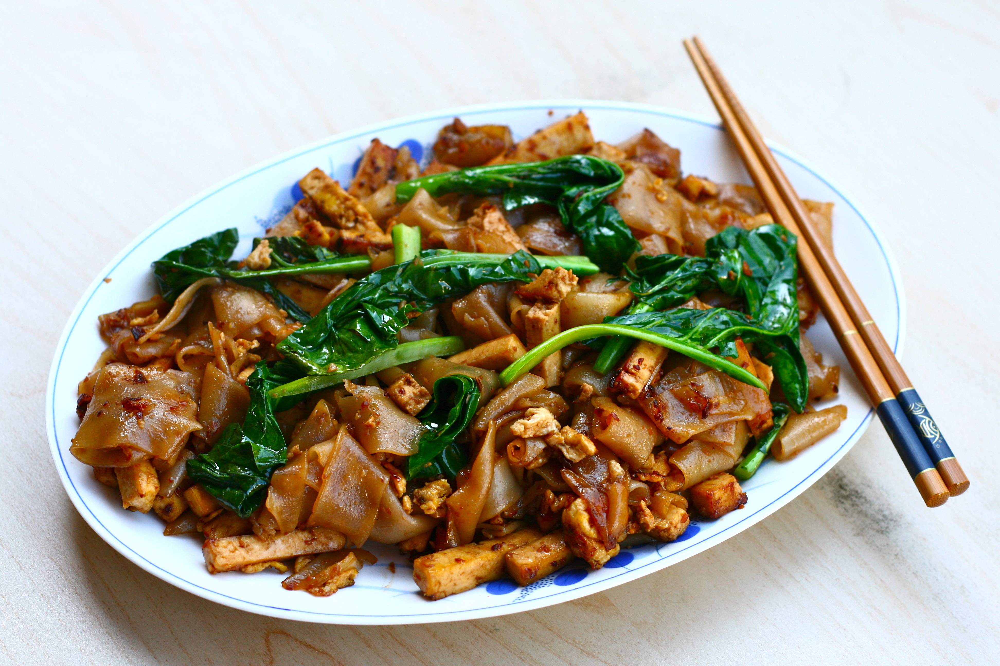

Pad See Ew
Time: 15 minutes
Cost: $15.00
Servings: 3

Ingredients
Noodles:
6oz / 180g dried wide rice stick noodles, or 15 oz 450g fresh wide flat rice noodles
Sauce:
2 tablespoons dark soy sauce (or sub with kecap manis)
2 tablespoons oyster sauce
2 teaspoons soy sauce (normal all purpose soy sauce)
2 teaspoons white vinegar (plain distilled white vinegar)
2 teaspoons sugar (white or brown)
2 tbsp water
Stir Fry:
2 tbsp peanut or vegetable oil
2 cloves garlic cloves
1 cup / 150g / 5oz chicken thighs (boneless, skinless), cut into bite size pieces
1 large egg
4 cups (packed) Chinese broccoli, leaves separated from stems (cut stems vertically into thin sticks)
Instructions
1. Prepare the noodles according to packet instructions. Some just require soaking in boiling water for 5 minutes, others require cooking in a pot of boiling water for a few minutes. For fresh noodles, soak in boiled water in a bowl for a few minutes - do not boil in a pot. Drain when ready.
2. Meanwhile, combine sauce ingredients.
3. Mince the garlic straight into the
with the oil. Place the high heat. As the oil is heating, the garlic will gradually heat too and infuse the oil with flavour.
4. When the oil is hot and the garlic is starting to turn golden, add the chicken and Chinese broccoli stems and stir fry for 1 minute.
5. Move the chicken and Chinese broccoli to one side and crack in the egg, and scramble it. Don't worry if some of it sticks to the
, it will char as you continue cooking - you want that chargrilled flavour!
6. Add noodles, leaves, and sauce.
Source: http://www.recipetineats.com/thai-stir-fried-noodles-pad-see-ew/